Build, Fight, and Explore... The Realm of Terraria Awaits you...
Terraria is a 2D action-adventure-sandbox game, developed by Re-LOGIC. First released
on windows on 2011 and has since been ported to other platforms. The game consist of exploration,
building, painting, combat and so much more...
Sold by over 44 million copies by 2022. It has become one of the best-selling video games of all time...
History of Major Release Versions
The 1.0 Update [1.0 - 1.1.1]
The first ever release of Terraria. Published on May 11, 2011
As expected from games in their first release, there are only
quite a few items and content to go through. Skeletron
 would
be considered as the final boss of this version.
would
be considered as the final boss of this version.
Since then, Terraria have recieved the 1.1 Update, which introduces us to many more stuffs, including the new fabled


Available Bosses:


Available NPCS:


>> See all version history for full details at the official Terraria wiki
would
be considered as the final boss of this version. Since then, Terraria have recieved the 1.1 Update, which introduces us to many more stuffs, including the new fabled
Hard-Mode
, in order to the player's might with new difficulties - while at the same time, introducing 4 new bosses to the mix 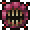
Available Bosses:
Available NPCS:
>> See all version history for full details at the official Terraria wiki


The 1.2 Update [1.2 - 1.2.4]
Following the 1.0 - 1.1 Update comes the 1.2 Update, which features
many more content than before. Introducing to us the first-ever
crimson biome - a new world evil that can be possibly obtained when
creating a new world. Other than that, the content has expanded as
well, introducing the new 'Hardmode' which also introduces to us the
Hallow Biome.
With new content also comes along with new bosses as well, Introducing to us with Plantera 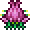 , Brain of Cthulhu , Queen Bee
, Queen Bee  , Golem
, Golem  , and the
Mobile/Console exclusive boss, Ocram
, and the
Mobile/Console exclusive boss, Ocram
It also comes along with brand new NPCs to aid you on your Terraria journey, and make your world a bit more alive than ever.
The version ended with 1.2.4 before another big one approached near 2015...
Available Bosses:
Available NPCS:


 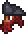
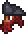
 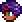
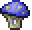
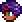
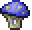

>> See all version history for full details at the official Terraria wiki
With new content also comes along with new bosses as well, Introducing to us with Plantera 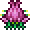 , Brain of Cthulhu
, Queen Bee
, Golem
, and the
Mobile/Console exclusive boss, Ocram
It also comes along with brand new NPCs to aid you on your Terraria journey, and make your world a bit more alive than ever.
The version ended with 1.2.4 before another big one approached near 2015...
Available Bosses:
Available NPCS:
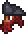
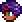
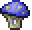
>> See all version history for full details at the official Terraria wiki
The 1.3 Update [1.3.0 - 1.3.5.3]
Perhaps one of the biggest content update that Terraria has recieved
from all of its history. Introducing a plethora of new events to the
mix, and jst like with every update... NEW BOSSES, MORE ITEMS, IMPROVED
GRAPHICS, and so much more...
It is sad however that Ocram has now been removed from this version. But say hello to the NEW FINAL BOSS to challenge to... The Moon Lord , which
can only be beaten by defeating the lunatic cultist
, which
can only be beaten by defeating the lunatic cultist  and the four celestial pillars
and the four celestial pillars


And while at it, how about experiencing about a new mode to spice up your playthrough by introducing the new mode:
Available Bosses:

Available NPCS:
>> See all version history for full details at the official Terraria wiki
It is sad however that Ocram has now been removed from this version. But say hello to the NEW FINAL BOSS to challenge to... The Moon Lord
, which
can only be beaten by defeating the lunatic cultist
and the four celestial pillars
And while at it, how about experiencing about a new mode to spice up your playthrough by introducing the new mode:
Expert Mode. 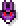
Available Bosses:
Available NPCS:
>> See all version history for full details at the official Terraria wiki


Terraria: Journey's End [1.4 - 1.4.4.9]
And now we have reached at the 'End' of the journey, as the developers
would then release their 'final' update to the game... Simply named...

While not as much as big as the 1.3 update, this version still manage to introduce us with much content than ever. Which means, more items, new bosses, new gamemodes, and much more...
Be a collector and experience the fun of
Or be a challenger and experience the new Difficulty of
Or just chill for a while and play a nice game of golf for once...

An update history full of Quality of Life changes, as well as collaborations from other games - as a way of commemorate players that have come a long journey since the beginning.
Available Bosses:


Available NPCS:
>> See all version history for full details at the official Terraria wiki
While not as much as big as the 1.3 update, this version still manage to introduce us with much content than ever. Which means, more items, new bosses, new gamemodes, and much more...
Be a collector and experience the fun of
journey mode

Or be a challenger and experience the new Difficulty of
Master Mode

Or just chill for a while and play a nice game of golf for once...
An update history full of Quality of Life changes, as well as collaborations from other games - as a way of commemorate players that have come a long journey since the beginning.
Available Bosses:
Available NPCS:
>> See all version history for full details at the official Terraria wiki


Game Modes
Journey Mode
"With great power comes great responsibility"
For those who have a habit of collecting stuffs, or have been a fan of Minecraft Creative Mode, this mode is just for you. On world creation, select
and you'll be good to go.
PS: Must require a journey mode character to access
Considered to be the "creative mode" of Terraria, players can experience the full content of the game without having to overcome challenges. Allowing the player a wide array of customization options during gameplay, including duplication of items, modification of time and weather, and difficulty sliders.

Control how the game flows for you... like a god of this world.
Classic Mode
"Your Journey Begins..."
The standard difficulty for all Terrarians old and new. Just click on the
 on world creation, and your first journey will soon begin.
on world creation, and your first journey will soon begin.
A difficulty mode that is recommended for new players who wants to explore the game while facing challenges along the way...
Expert Mode
"Fortune & Glory, Kid."
Step up to the challenge and face Expert Mode in your journey. Just select on world creation and prepare for what is to come in your way

Introducing new boss patterns, and deadlier enemies; this will make you step up your gameplay even more, while at the same time, rewarding you with great loots to collect.
 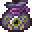
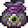


 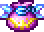
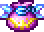

So... are you up to to the challenge?
Master Mode
"Game over man, game over!"
Expert mode still not enough for you? Then let us introduce Master Mode for you. Just click on
and prepare for the worst...
MORE HP, MORE DAMAGE, MORE BRUTALITY THAN EVER!!
Conquer and earn majestic trophies of fallen foes!!


 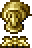
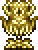
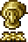
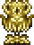